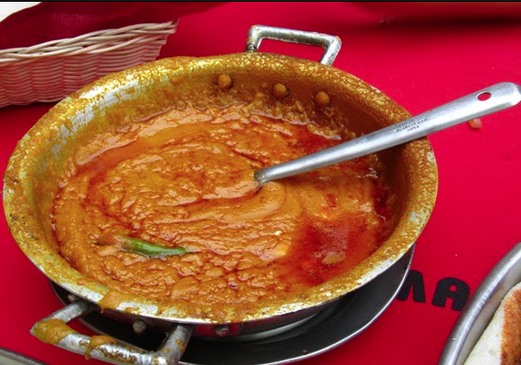

Shiro

Introduction
Shiro is the staple of Ethiopian food - its quick to make and, typically served fresh after being cooked.
Spread on the base of Injera it can be a a filling meal commonly shared in a group.
Ingredients:
- Chickpea or Bean powder
- Clarified butter or Oil
- Traditional spices(Berbere)
- Salt & Pepper
- Onions, Garlic, Ginger and occasionally crushed tomatoes
Steps:
- Start by pureeing the onions in the blender.
- Dump the onion mush into a hot dry skillet (I love my cast iron skillet for this!) Stir frequently until the water evaporates and the onions start to get just a tiny bit of light brown color.
- Once the onions begin to color a bit, add 1/2 cup oil and some berbere.
- My girls use at least 1/4 cup of berbere for this recipe.
- If you like your food milder, you can start with less, them taste and see how it seems to you.
- Let the onion and the berbere cook in the oil for a minute or two.
- Puree one tomato. Add pureed tomato to the skillet and cook for a minute or two. Be careful as you add the tomato, as the oil will spit at you.
- Before you add the shiro powder, make sure that you have a couple of cups of water close by. Add your shiro powder gradually, stirring briskly with a wooden spoon or a wire whisk. It will pretty quickly get very thick and 'pop'.
- Once the shiro seems pretty well mixed into the oil, add a couple cups of water. Stir well. The mixture will thicken as it cooks. You can turn your heat down to medium at this point.
This information is taken from and more detail can be found at